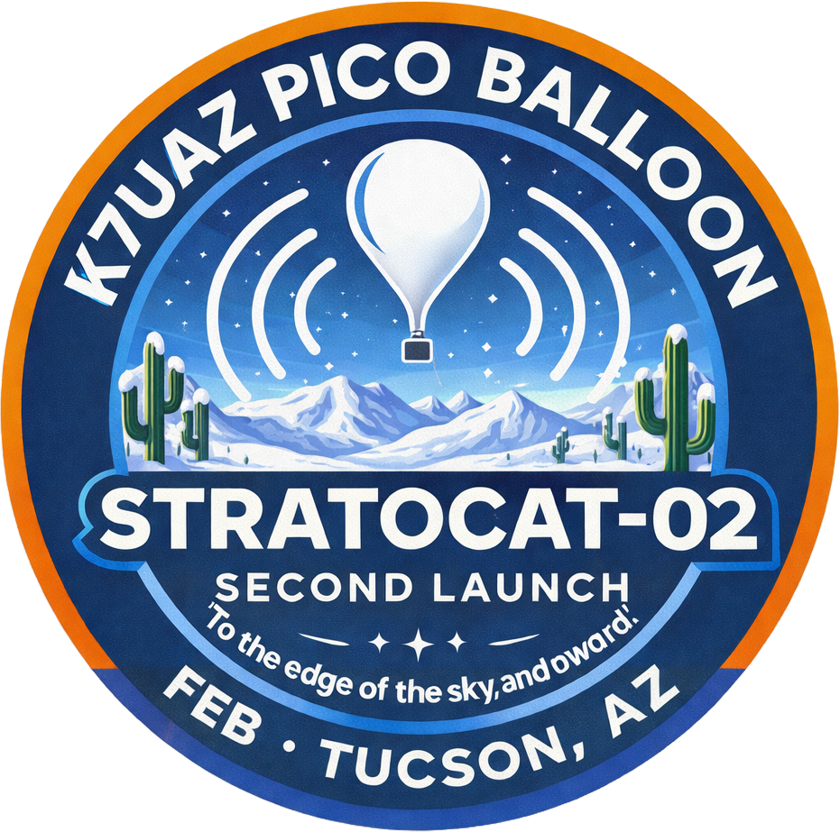

Build a repeatable student mission architecture for global-scale picoballoon tracking using WSPR telemetry, reliable power, and well-documented launch operations.
K7UAZ Stratocat Project
Around the World in Less Than 80 Days.
Student teams are launching a picoballoon with a WSPR Pico transmitter to pursue long-duration global tracking while advancing flight systems, amateur radio operations, and mission engineering discipline.
Primary Sponsor: ARRL, The National Association for Amateur Radio
ARRL mission: advance the art, science, and enjoyment of Amateur Radio.
0
Flights launched
0 m
Max altitude
0.0 h
Longest track time

Mission 2 is in prep now with launch weekend targeted for Saturday, February 28, 2026.
Featured Flights
Design A, B, and C mission progression
Flight reports include mission metrics, hardware changes, and lessons learned so sponsors and members can track technical maturity.